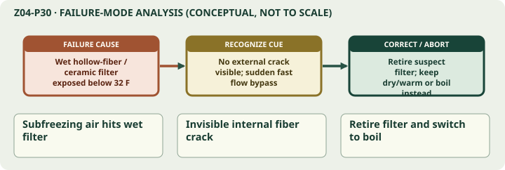

Z04-P30 · Water · New manuscript
Manage winter freeze-up of surface sources and intake gear
Prevent hoses, valves, squeeze bags and filter elements from freezing solid during cold-weather collection.
When it applies · Backcountry travel when air temperatures approach or fall below freezing (32°F / 0°C).
Equipment · Wide-mouth bottles, insulated carry sleeves, chemical or boiling backup and dry storage bag for wet filter elements.

Actions
- Prefer boiling or chemical disinfection matched to cold-water contact times when subfreezing temperatures threaten mechanical filters and pump hoses.[W28, W02, W05, W26]
- Drain excess water from squeeze filters and hoses immediately after use and store wet cartridges inside an insulated inner jacket pocket or sleeping bag to prevent freezing.[W28, E10, ED]
- Recognize that cold water slows chemical disinfectant reactions; check product labels for cold-water extended wait times before drinking.[W05, W12]
Failure recognition · Leaving a damp hollow-fiber filter in an outside pack pocket overnight below freezing, cracking fibers invisibly and continuing to drink bypassed water.[W28]
Verify · Confirm every wet filter stayed continuously above freezing or switch immediately to boiling or a verified unaffected backup.[W28, W02, ED]
Stop or change course · Discard or retire any hollow-fiber or ceramic filter suspected of freezing while wet; never guess whether internal fibers survived intact.[W28]
Evidence and editorial notes
- E10 · NWS · What To Do If You're Caught in a Winter Storm (current web edition)
- Section: Outside > Protect yourself from frostbite and hypothermia · Conditions: Outdoor winter storm
Support: Keep clothing dry and avoid overexertion. Wetness accelerates cooling.
Limitations: Cotton retains moisture and accelerates conductive and evaporative heat loss. · Conflicting evidence: None; reinforces moisture-management layering.
Editorial note: Links sweat management to overnight insulation integrity. · Specialist reviewer: Cold-weather shelter and wilderness medicine
Primary source · checked 2026-11-24 - W02 · CDC · How to Make Water Safe in an Emergency (2024-09-19)
- Section: Boil > Steps for boiling water · Conditions: Microbiologically suspect water with acceptable chemical source; portable heat and safe vessel
Support: Clarify cloudy water first. Rolling boil for one minute; above 6,500 feet for three minutes. Cool and cover in sanitized containers.
Limitations: Does not remove dissolved metals, nitrates, fuel, or cyanotoxins. · Conflicting evidence: Older Track B B009 omitted the 6,500 ft threshold; CDC threshold governs.
Editorial note: Require explicit timer verification after rolling boil starts. · Specialist reviewer: Drinking-water safety and public health
Primary source · checked 2026-11-24 - W05 · CDC · How to Make Water Safe in an Emergency (2024-09-19)
- Section: Disinfect; Using light · Conditions: Matched product, concentration, dose, contact time and source condition
Support: Chemical disinfection is less dependable against some parasites. UV needs clear water and a correctly used device.
Limitations: Cold temperature and organic turbidity reduce chemical efficacy and UV penetration. · Conflicting evidence: None; exact manufacturer label governs dose and wait time.
Editorial note: Prohibits improvised chemical dosing when labels are absent. · Specialist reviewer: Drinking-water treatment specialist
Primary source · checked 2026-11-24 - W12 · US EPA · Emergency Disinfection of Drinking Water (current web edition)
- Section: Emergency Disinfection of Drinking Water > Bleach · Conditions: Emergency water when boiling is unavailable; unscented 5%–9% liquid household chlorine bleach
Support: Filter cloudy water first, verify unscented sodium hypochlorite concentration on the label, mix thoroughly, and wait at least 30 minutes before use.
Limitations: Ineffective against Cryptosporidium and chemical/fuel contaminants; bleach degrades with age and heat. · Conflicting evidence: EPA and CDC both note 8 drops (about 1/8 tsp) per gallon for clear water with 5%–9% bleach; exact concentration on current bottle governs.
Editorial note: Requires reading the bottle label rather than memorizing a single drop count for unknown concentrations. · Specialist reviewer: Drinking-water safety and public health
Primary source · checked 2026-11-24 - W26 · NPS · Two Ways to Purify Water (current web edition)
- Section: Two Ways to Purify Water · Conditions: Backcountry water treatment planning in National Parks
Support: Boiling and chemical/filtration methods each have fuel, time, weight, and organism-coverage trade-offs; match the primary method and backup to route conditions and follow directions.
Limitations: Does not resolve chemical spills or algal toxins. · Conflicting evidence: Aligns with CDC-T altitude and parasite limits.
Editorial note: Supports primary-plus-backup water treatment selection in Z04. · Specialist reviewer: Backcountry water safety
Primary source · checked 2026-11-24 - W28 · CDC · Water Treatment Options When Hiking, Camping, or Traveling (current web edition)
- Section: Water Treatment Options > Freeze Damage and Maintenance · Conditions: Hollow-fiber and ceramic filters used in freezing or near-freezing temperatures
Support: Freezing water inside a wet filter element can crack hollow fibers or ceramic pores invisibly, allowing untreated water to bypass the barrier; keep wet filters above freezing or replace suspect elements.
Limitations: Internal crack failure often shows no visible external leak. · Conflicting evidence: None; critical cold-weather filter failure mechanism.
Editorial note: Drives cold-weather filter protection and failure-recognition cards. · Specialist reviewer: Drinking-water treatment and cold-weather operations
Primary source · checked 2026-11-24
Source lineage · CDC freeze-damage limits and NWS cold safety; new manuscript · Classification · New manuscript.